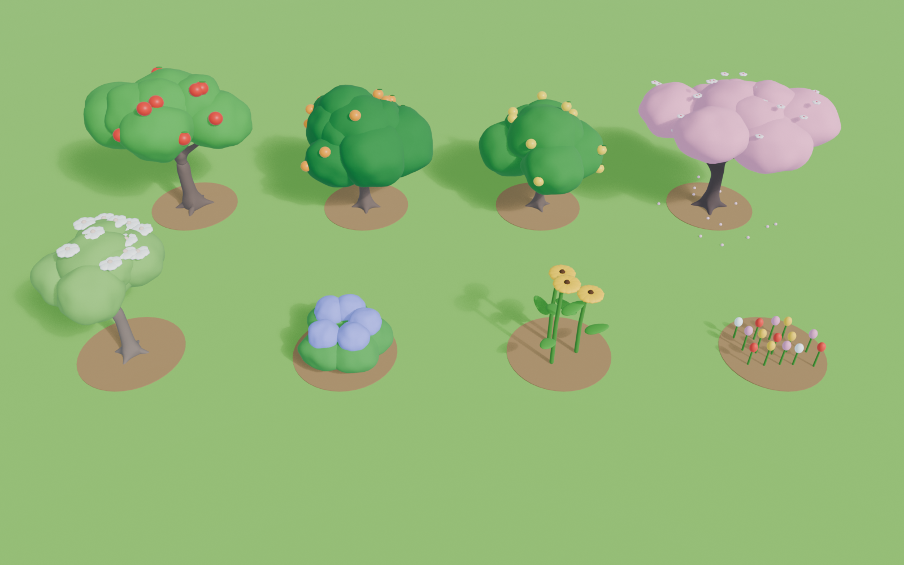
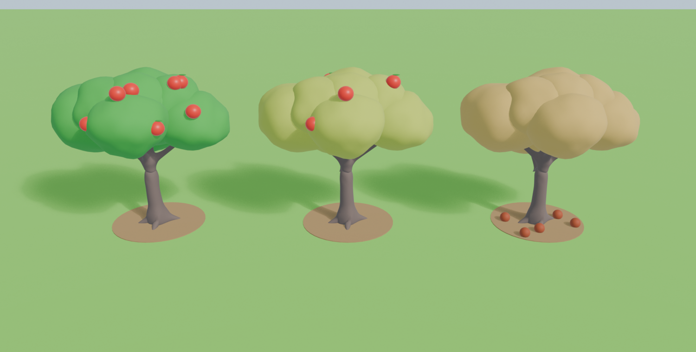
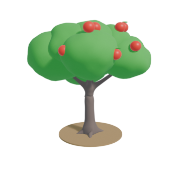
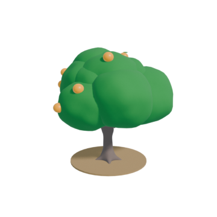
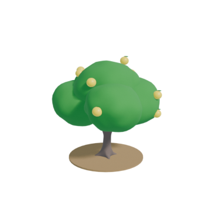
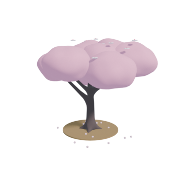
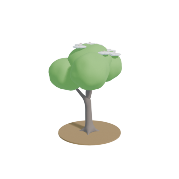
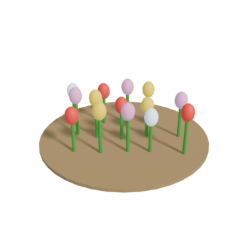
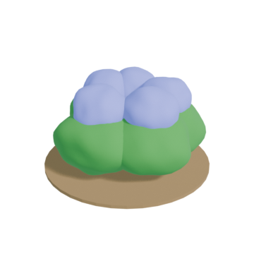
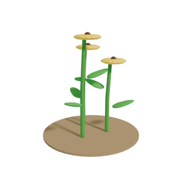

위 줄은 과일나무(사과·귤·레몬)와 벚나무, 아래 줄은 목련·수국·해바라기·튤립이야. 지금 정원 나무와 같은 둥근 덩어리 스타일로 만들었어.

과일나무로 바꾸면 열매가 곧 신호가 돼. 왼쪽부터 좋음(열매 많음) → 흐림(열매 적고 잎이 누래짐) → 시듦(열매가 떨어짐). 지금 나무의 잎 색 변화는 그대로 두고 열매만 더해.

핵심 차이는 "가게에서 산 나무가 무엇이 되느냐"야. A는 종목 나무의 품종, B는 종목과 상관없는 꾸미기, C는 씨앗을 사서 며칠 키우는 방식이야.
가게에서 품종을 열고, 내 종목 나무 하나를 그 품종으로 바꿔. 정원의 나무 수는 그대로고 모습만 예뻐져. 신호(열매 수)가 품종과 같이 가서 정원이 곧 내 포트폴리오인 건 유지돼. 대신 꾸밀 수 있는 수가 종목 수만큼으로 묶여.


귤작고 열매 많음C15
레몬노란 열매C20
벚나무꽃잎이 날려요C30
목련큰 흰 꽃C40꽃나무는 꽃 수로, 과일나무는 열매 수로 상태를 보여줘요.
종목 나무는 그대로 두고, 가게에서 산 꽃·나무는 빈 풀밭 아무 데나 심어. 정원을 넓힐 이유가 생기고("심을 데가 없네"), 신호와 꾸미기가 섞이지 않아. 대신 꾸민 나무와 종목 나무가 헷갈리지 않게 종목 나무는 흙 자리·팻말로 구분해야 해.


꽃은 8~12코인. 심은 건 언제든 창고로 다시 넣을 수 있어요.
정원에 꽃집 수레가 있고, 씨앗을 사서 심으면 들어올 때마다 하루씩 자라서 3~5일 뒤에 꽃·나무가 돼. 출석·오늘의 퀘스트와 바로 이어져서 "내일 또 와야지"가 생겨. 심는 곳은 B처럼 빈 풀밭. 가장 게임 같지만 만들 게 가장 많아.

출석하면 심은 게 하루씩 자라요. 안 와도 시들지는 않아요.
지금은 걸을 수 있는 반지름이 22라서 집·밭·과수원·관측소가 서로 붙어 있어. 제안은 반지름 32(넓이 약 2배), 장소 사이 간격을 1.4배로 벌리고 빈 풀밭(꾸미기·가게 자리)을 둬. 멀어진 만큼 지도에서 바로 가기와 걷기 속도를 같이 올려.